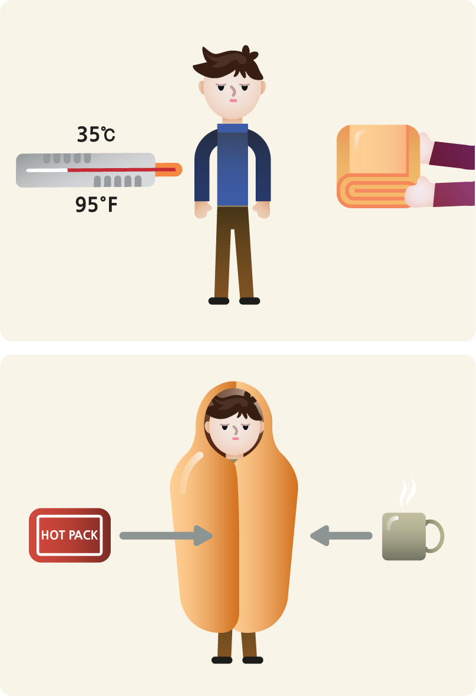

추위에 오래 노출되면 발가락부터 동상에 걸리기 쉽습니다. 외출할 때는 눈에 발이 젖지 않도록 방수소재 부츠를 신고 여벌의 양말을 휴대하여 젖으면 바로 갈아 신도록 합니다.
손가락, 발가락, 코끝, 귓불 등 신체의 끝 부위의 감각이 없어지면서 하얗게 변하면 동상의 초기 증상입니다. 노출된 부위를 마른 천으로 덮고 실내에서 천천히 체온을 올려주어야 합니다.
언 부위를 문지르거나 직접 불을 쪼이면 안됩니다.
체온이 35℃ 이하로 떨어지는 것을 ‘저체온증’이라고 합니다. 혈압이 낮아지고 신진대사가 느려지며, 체온이 계속 내려가면 빠른 시간 내 사망에 이르게 됩니다.
저체온증에 걸린 사람은 따뜻한 곳으로 옮겨서 젖은 옷은 벗기고, 온 몸을 담요로 감싸 천천히 따뜻하게 해줍니다.
배에 핫팩을 얹어 몸의 중심부부터 덥혀 줍니다. 의식이 있다면 따뜻한 비알콜성 음료를 마시게 합니다.
팔, 다리를 문지르지 마십시오. 혈류의 흐름을 방해할 수 있고 미처 발견하지 못한 동상이 걸린 피부를 상하게 할 수도 있습니다.
체온이 34℃ 이하이거나 위와 같은 증상이 나타나면 즉시 의료진의 도움이 필요합니다. 뇌 손상이 생길 수 있고 급하게 체온을 올리려 하면 심장마비가 올 수도 있습니다. 환자를 담요로 감싸고 119에 연락해야 합니다.
직접 이송해야 하는 경우, 다음과 같이 담요와 방수천으로 환자를 감쌉니다.

핫팩이 있다면 겨드랑이와 사타구니에 끼워 넣고, 발 쪽에 담요가 겹치게 합니다.
머리, 얼굴, 목에도 찬 공기가 닿지 않도록 모자, 목도리, 담요로 감싸되, 호흡으로 배출되는 수분으로 옷과 담요가 젖지 않도록 코와 입은 밖으로 내놓습니다.
겨울철에는 외출 시간을 제한하고 주기적으로 실내로 들어와 몸을 녹이는 것이 동상과 저체온증 예방에 최선임을 기억하세요.